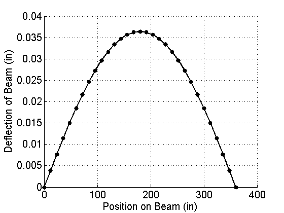

function linearShooting %Solves the BVP y'' = p(x)y' + q(x)y + r(x), for a<x<b, with the boundary %conditions y(a)=alpha and y(b)=beta. %%%%%%%%%%%%%%%%%%%%%%%%%%%%%%%%%%%%%%%%%%%%%%%%%%%%%%%%%%%%%%%%%%%%%%%%%%% %INPUTS. Change these to adjust for the problem you are solving. S=900; L=360; E=5e7; I=600; Q=5; a = 0; b = L; %the endpoints of the interval, a<x<b. h = 12; %space between points on x axis. alpha = 0; beta = 0; %boundary values. y(a)=alpha, y(b)=beta. p = @(x) 0; %continuous function q = @(x) S./(E.*I); %positive continuous function r = @(x) Q*x./(2*E.*I).*(x-L); %continuous function %%%%%%%%%%%%%%%%%%%%%%%%%%%%%%%%%%%%%%%%%%%%%%%%%%%%%%%%%%%%%%%%%%%%%%%%%%% %Main part of the code. Solves numerically the two IVP systems with %ode45, and then combines the results to form the solution y to the BVP. t = a:h:b; [ ~, y1 ] = ode45( @odefun1, t, [alpha,0] ); [ ~, y2 ] = ode45( @odefun2, t, [0,1] ); y1 = y1(:,1); y2 = y2(:,1); y = y1 + (beta-y1(end)) / y2(end) * y2; %%%%%%%%%%%%%%%%%%%%%%%%%%%%%%%%%%%%%%%%%%%%%%%%%%%%%%%%%%%%%%%%%%%%%%%%%%% %Plots the numerical solution y figure(1), clf, hold('on') plot( t, y, 'k', 'lineWidth', 2 ) [maxDeflectionValue,index] = max(y); maxDeflectionPosition = index * h; plot( t, y, 'k.', 'markerSize', 20 ) set( gca, 'fontSize', 15 ) xlabel('Position on Beam (in)'), ylabel('Deflection of Beam (in)') grid('on') drawnow, hold('off') %%%%%%%%%%%%%%%%%%%%%%%%%%%%%%%%%%%%%%%%%%%%%%%%%%%%%%%%%%%%%%%%%%%%%%%%%%% %The two ODE functions that are passed into ode45 function u = odefun1(t,y) u = zeros(2,1); u(1) = y(2); u(2) = p(t)*y(2) + q(t)*y(1) + r(t); end function u = odefun2(t,y) u = zeros(2,1); u(1) = y(2); u(2) = p(t)*y(2) + q(t)*y(1); end end